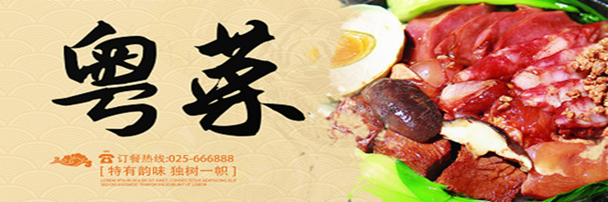

中国八大菜系之粤菜
首页
粤菜介绍
经典菜品
菜系特色
菜品评价
在线交流

粤菜特点
清鲜为本，原味至上，技法多样，火候精准，兼容并蓄，中西融合，季节性强，依时而食
- 遵循“春吃芽、夏吃瓜、秋吃蟹、冬吃根”的时令原则
历史上吸收中原、南洋、西洋饮食元素
涵盖蒸、炒、炖、焗、灼、烧、卤、焖等数十种技法，尤擅**小炒**（猛火快炒）与**老火汤**（文火慢炖）。
粤菜强调“大味至淡”，追求食材本身的鲜味，避免过度调味。例如“白切鸡”仅用清水煮制，蘸姜葱蓉提鲜；“清蒸鱼”仅靠火候与豉油激发鱼肉甘甜。
烹饪哲学：“有鲜味时不抢味，无鲜味时需借味”，如用火腿、干贝为素菜提鲜。
取材特点
天上飞的、地上跑的、水里游的皆可入馔，传统上甚至包含蛇、禾花雀（现多为保护动物）、龙虱等特殊食材。
善用火候，火功独到。根据不同原料的质地特点、成品菜的风味要求，分别采用大火、中火、小火烹调。
追求极致新鲜，海鲜需在水族箱中现捞现杀，牛肉火锅的肉需从屠宰场到餐桌不超过4小时
注重天然，以食养身。粤菜的原料，资源丰富、质地优良、取之不尽、用之不竭。